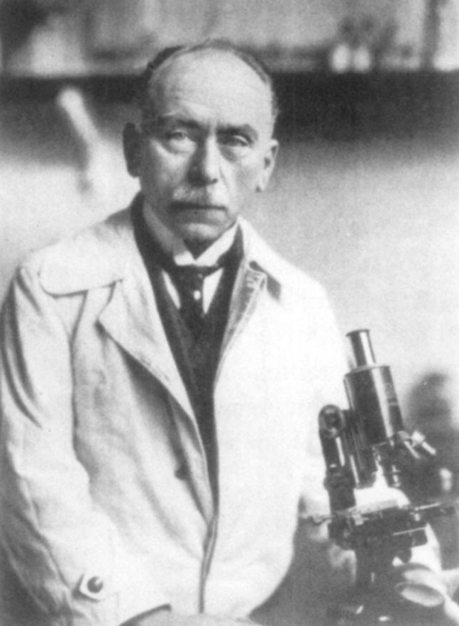
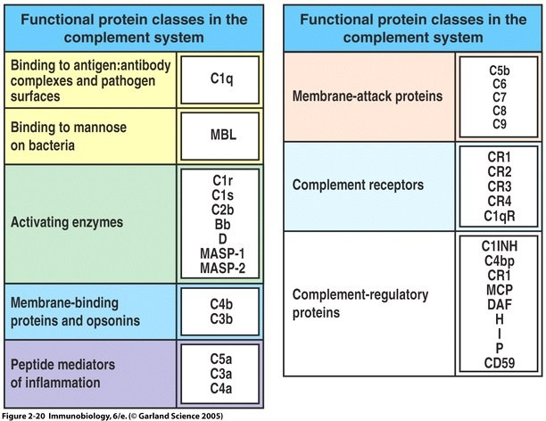
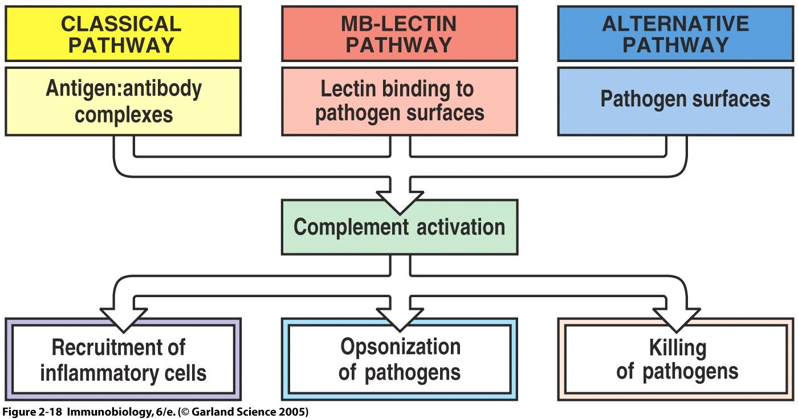
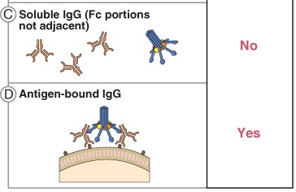
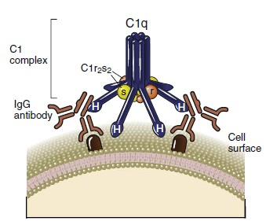
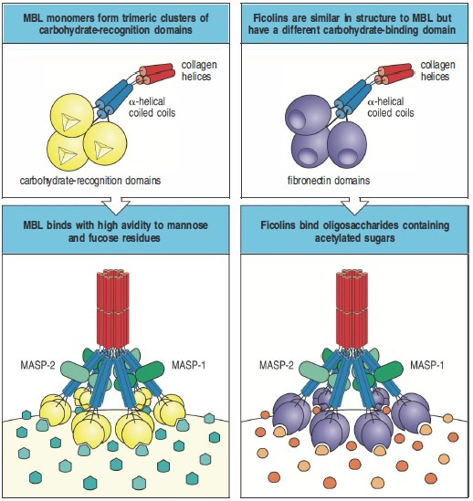
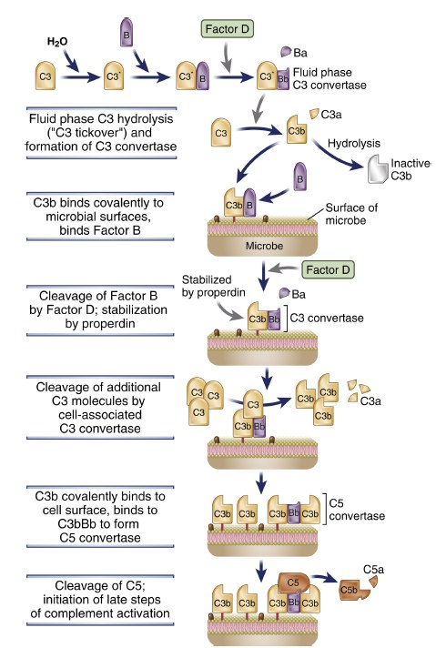
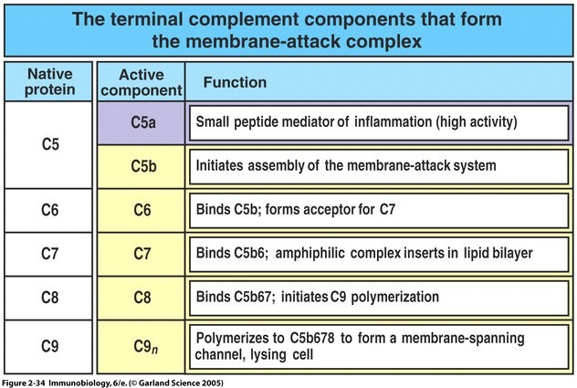
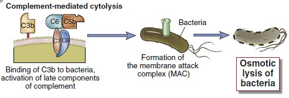

Complement — The Cast and the Three Pathwaysکمپلمان — بازیگران و سه مسیر
Thirty-odd proteins, but only one event that matters: the cleavage of C3. Three pathways are three different ways of building the enzyme that does it, and after that point all three are the same. Learn it in that shape and the cast list stops being a list.سیوچند پروتئین، اما تنها یک رویداد مهم: شکستن C3. سه مسیر، سه راه متفاوت ساختن آنزیمیاند که این کار را میکند، و پس از آن نقطه هر سه یکساناند. آن را در همین شکل یاد بگیرید و فهرست بازیگران دیگر فهرست نخواهد بود.
By the end of this Part you should be able toدر پایان این بخش باید بتوانید
Read any complement symbol you meet, including ones not taught here.هر نماد کمپلمانی را که میبینید بخوانید، حتی آنها که اینجا آموزش داده نشدهاند.
Name the initiator, the C3 convertase and the C5 convertase of each pathway.آغازگر، C3 کانورتاز و C5 کانورتاز هر مسیر را نام ببرید.
Explain why free antibody cannot activate complement but bound antibody can.توضیح دهید چرا آنتیبادی آزاد نمیتواند کمپلمان را فعال کند اما آنتیبادی متصل میتواند.
Describe how the MAC kills a cell.شرح دهید MAC چگونه سلول را میکشد.
5.1What Complement Is, and How to Read Its Namesکمپلمان چیست و نامهایش را چگونه بخوانیم
Definitionتعریف
The complement system consists of a large number of proteins that react with one another to opsonise pathogens and to induce a series of inflammatory responses that help to fight infection.سیستم کمپلمان از شمار زیادی پروتئین تشکیل شده که با یکدیگر واکنش میدهند تا پاتوژنها را اپسونیزه کنند و مجموعهای از پاسخهای التهابی را برانگیزند که به مبارزه با عفونت کمک میکند.

Fig 5.1Jules Bordet (1870–1961), Nobel Prize 1919. He found complement by heating serum: the antibacterial power of fresh serum disappeared at 56 °C, and came back when fresh serum was added. Something heat-labile was helping the antibody — and that something is this whole Part.ژول بورده (۱۸۷۰–۱۹۶۱)، نوبل ۱۹۱۹. کمپلمان را با حرارتدادن سرم یافت: توان ضدباکتریایی سرم تازه در ۵۶ درجه از میان میرفت و با افزودن سرم تازه بازمیگشت. چیزی حساس به حرارت به آنتیبادی کمک میکرد — و آن چیز، تمام این بخش است.
Historical anchor — where the name comes fromلنگر تاریخی — نام از کجا میآید
Jules Bordet (1870–1961, Nobel Prize 1919) discovered complement as a heat-labile component of normal plasma that augments the opsonisation and killing of bacteria by antibodies. This activity was said to complement the antibacterial activity of antibody — hence the name. Note what that history tells you: complement was found as antibody’s helper, which is why the antibody-dependent route is called the classical pathway even though it was, in evolutionary terms, the last to appear.ژول بورده (۱۸۷۰–۱۹۶۱، نوبل ۱۹۱۹) کمپلمان را بهعنوان جزئی حساس به حرارت در پلاسمای طبیعی کشف کرد که اپسونیزاسیون و کشتن باکتری توسط آنتیبادی را تقویت میکند. گفته شد این فعالیت، فعالیت ضدباکتریایی آنتیبادی را تکمیل میکند — و نام از همینجاست. توجه کنید این تاریخ چه میگوید: کمپلمان بهعنوان دستیار آنتیبادی یافته شد، و به همین دلیل مسیر وابسته به آنتیبادی کلاسیک نامیده میشود، هرچند از نظر تکاملی آخرین مسیری بود که پدید آمد.
Name decoder — complement notationرمزگشای نام — نمادگذاری کمپلمان
C
Complement componentجزء کمپلمان
C1, C2, C3, C5C1, C2, C3, C5
a
The small fragment after cleavageقطعهٔ کوچک پس از شکستن
C3a, C5a — these diffuse away and act as inflammatory mediatorsC3a, C5a — اینها دور میشوند و واسطهٔ التهابیاند
b
The large fragment after cleavageقطعهٔ بزرگ پس از شکستن
C3b, C4b, C5b — these stay attached to the surface and build the next enzymeC3b, C4b, C5b — اینها به سطح متصل میمانند و آنزیم بعدی را میسازند
C̄ (overbar)
Activated — it is now an enzymeفعالشده — اکنون یک آنزیم است
C̄1 means C1 that has become proteolytically activeC̄1 یعنی C1ای که فعالیت پروتئولیتیک یافته
i
Inactivatedغیرفعالشده
iC3b — C3b that factor I has cut up; still an opsonin, no longer an enzymeiC3b — C3bای که فاکتور I آن را بریده؛ هنوز اپسونین است، دیگر آنزیم نیست
Letters
Alternative-pathway proteins have letters, not numbersپروتئینهای مسیر آلترناتیو حرف دارند نه عدد
Worked example — C4b2a. Read it left to right as a list of assembled parts: C4b (the large fragment of C4, stuck to the surface) plus 2a (a fragment of C2) — two pieces joined into one complex. Because it is a complex of activated fragments sitting on a membrane, it is an enzyme, and the fact that it appears in the classical pathway immediately after C4 and C2 tells you what it must cleave next: C3. So C4b2a is the classical-pathway C3 convertase, and you have derived that rather than memorised it. Add another C3b — C4b2a3b — and the specificity shifts to C5.مثال حلشده — C4b2a. از چپ به راست بهصورت فهرستی از اجزای سرهمشده بخوانید: C4b (قطعهٔ بزرگ C4، چسبیده به سطح) بهعلاوهٔ 2a (قطعهای از C2) — دو تکه که در یک کمپلکس پیوستهاند. چون کمپلکسی از قطعات فعالشده روی غشاست، یک آنزیم است، و اینکه در مسیر کلاسیک بلافاصله پس از C4 و C2 میآید میگوید چه چیزی را باید بشکند: C3. پس C4b2a همان C3 کانورتاز مسیر کلاسیک است و شما آن را استنتاج کردید نه حفظ. یک C3b دیگر بیفزایید — C4b2a3b — و اختصاصیتش به C5 جابهجا میشود.
Exam Trap — C2a or C2b?دام امتحانی — C2a یا C2b؟
C2 is the one exception to the a-is-small rule, and textbooks disagree. In the older convention used by this lecture, the large fragment of C2 is called C2a and the convertase is written C4b2a; some modern texts reverse it and write C4b2b. Follow your lecturer’s convention — here, C4b2a. If a question gives you the alternative, recognise that it means the same complex and do not treat it as a different molecule. The underlying biology never changes: the large fragment of C2 joins C4b to make the classical C3 convertase.C2تنها استثنای قاعدهٔ «الف یعنی کوچک» است و کتابها اختلاف دارند. در قرارداد قدیمیتری که این درس بهکار میبرد، قطعهٔ بزرگC2 را C2a مینامند و کانورتاز C4b2a نوشته میشود؛ برخی متون نوین برعکسش میکنند و C4b2b مینویسند. قرارداد مدرّس خودتان را دنبال کنید — اینجا C4b2a. اگر سؤالی شکل دیگر را داد، بدانید همان کمپلکس است و مولکول دیگری فرضش نکنید. زیستشناسی زیربنایی هرگز تغییر نمیکند: قطعهٔ بزرگ C2 به C4b میپیوندد و C3 کانورتاز کلاسیک را میسازد.
Properties of complementویژگیهای کمپلمان
Table 5.1 What kind of substance complement isجدول ۵.۱ — کمپلمان چه نوع مادهای است
Propertyویژگی
And why it mattersو چرا مهم است
Glycoprotein — globulinsگلیکوپروتئین — گلوبولین
Present in normal serum at all times, before any infection. Complement is not induced by the pathogen; it is already there, waitingدر سرم طبیعی همیشه حاضر است، پیش از هر عفونتی. کمپلمان را پاتوژن القا نمیکند؛ از پیش آنجاست، منتظر
Heat-labileحساس به حرارت
Activity is destroyed by heating serum to 56 °C for 30 minutes. This is a real laboratory procedure — “heat-inactivated serum” means exactly this, and it is done routinely so that complement in the serum does not interfere with an assayفعالیتش با حرارتدادن سرم به ۵۶ درجه بهمدت ۳۰ دقیقه از بین میرود. این یک روال واقعی آزمایشگاهی است — «سرم غیرفعالشده با حرارت» دقیقاً یعنی همین، و بهطور معمول انجام میشود تا کمپلمان سرم در آزمون اختلال ایجاد نکند
Produced by hepatocytes and macrophagesساختهٔ هپاتوسیت و ماکروفاژ
Mostly the liver. Severe liver disease therefore lowers complement — one more reason cirrhotic patients get infectionsعمدتاً کبد. پس بیماری شدید کبدی کمپلمان را پایین میآورد — دلیلی دیگر برای عفونتهای بیماران سیروتیک
Acute-phase proteinپروتئین فاز حاد
Its concentration rises during inflammation, driven by IL-6 acting on the liver. So complement levels are higher in acute inflammation and lower when it is being consumed by immune complexes — a distinction that matters clinically (§6.4)غلظتش در التهاب بالا میرود، بهرانش اینترلوکین ۶ روی کبد. پس سطح کمپلمان در التهاب حاد بالاتر است و وقتی کمپلکسهای ایمنی مصرفش میکنند پایینتر — تمایزی که از نظر بالینی اهمیت دارد (بخش ۶.۴)
5.2The Cast Listفهرست بازیگران

Fig 5.2 The whole system sorted by job rather than by pathway: proteins that bind antigen–antibody complexes or microbes, activating enzymes, membrane-binding and opsonic proteins, peptide mediators of inflammation, complement receptors, and complement-regulatory proteins. Six jobs — every protein in the system does one of them.کل سیستم، مرتبشده بر اساس کار بهجای مسیر: پروتئینهایی که به کمپلکس آنتیژن–آنتیبادی یا میکروب میچسبند، آنزیمهای فعالکننده، پروتئینهای متصل به غشا و اپسونیک، واسطههای پپتیدی التهاب، گیرندههای کمپلمان و پروتئینهای تنظیمی. شش کار — هر پروتئین سیستم یکی از آنها را انجام میدهد.
Table 5.2 The three groups of complement proteinجدول ۵.۲ — سه گروه پروتئین کمپلمان
Groupگروه
Membersاعضا
1. Innate components — the cascade itself۱. اجزای ذاتی — خود آبشار
2. Control proteins — the brakes۲. پروتئینهای کنترلی — ترمزها
C1-INH · C4-binding protein (C4BP) · factor I · factor H · S protein (vitronectin) · Sp40/40 (clusterin) · decay-accelerating factor (DAF, CD55) · membrane cofactor protein (MCP, CD46) · MIRL (CD59)C1-INH · C4BP · فاکتور I · فاکتور H · پروتئین S · Sp40/40 · DAF · MCP · CD59
3. Receptors — how cells read the signal۳. گیرندهها — سلولها چگونه پیام را میخوانند
CR1 to CR5 · C3aR · C4aR · C5aRCR1 تا CR5 · C3aR · C4aR · C5aR
High-Yield — the shape of the whole system in one sentenceنکتهٔ کلیدی — شکل کل سیستم در یک جمله
Three pathways converge on one enzyme (a C3 convertase), which cleaves C3 into C3a and C3b; C3b then does the opsonising and builds the C5 convertase, which starts the terminal pathway that builds the MAC. Everything else in the cast list is either a component of one of those steps, a receptor that reads its output, or a brake that stops it going too far. If you can say that sentence you have the architecture, and the details have somewhere to attach.سه مسیر به یک آنزیم (C3 کانورتاز) میرسند که C3 را به C3a و C3b میشکند؛ سپس C3b اپسونیزاسیون را انجام میدهد و C5 کانورتاز را میسازد، که مسیر انتهایی را آغاز میکند و MAC را میسازد. هر چیز دیگری در فهرست بازیگران، یا جزئی از یکی از این گامهاست، یا گیرندهای که خروجیاش را میخواند، یا ترمزی که جلوی افراطش را میگیرد. اگر بتوانید این جمله را بگویید، معماری را دارید و جزئیات جایی برای چسبیدن پیدا میکنند.

Fig 5.3 The same architecture as a diagram. Three different recognition events at the top — antigen–antibody complexes, lectin binding to pathogen surfaces, pathogen surfaces directly — funnel into complement activation, and out of the bottom come the same three outputs every time: recruitment of inflammatory cells, opsonisation, killing.همان معماری بهصورت نمودار. سه رویداد شناسایی متفاوت در بالا — کمپلکس آنتیژن–آنتیبادی، اتصال لکتین به سطح پاتوژن، مستقیماً سطح پاتوژن — به فعالسازی کمپلمان میریزند، و از پایین هر بار همان سه خروجی بیرون میآید: فراخوانی سلولهای التهابی، اپسونیزاسیون، کشتن.
5.3The Classical Pathwayمسیر کلاسیک
Fig 5.4 The classical pathway as a strip. Read each arrow as “acts on”. Note that C4 comes before C2 despite the numbering — the components were numbered in order of discovery, not order of action.مسیر کلاسیک بهصورت نوار. هر پیکان را «اثر میکند بر» بخوانید. توجه کنید که C4 پیش از C2 میآید با وجود شمارهگذاری — اجزا بهترتیب کشف شماره خوردهاند، نه بهترتیب عمل.
Pathway 1 of 3 · CPThe classical pathwayمسیر کلاسیک
What starts itچه آغازش میکند
The antigen–antibody complex (immune complex) — not antibody alone.کمپلکس آنتیژن–آنتیبادی — نه آنتیبادی بهتنهایی.
C1q binds CH2 of IgG (IgG1, IgG2, IgG3) or CH3 of IgM.C1q به CH2 ایمونوگلوبولین G (زیرکلاسهای ۱، ۲، ۳) یا CH3 ایمونوگلوبولین M میچسبد.
One IgM molecule is enough; two IgG molecules are needed.یک مولکول IgM کافی است؛ دو مولکول IgG لازم است.
Soluble antibody cannot activate complement.آنتیبادی محلول نمیتواند کمپلمان را فعال کند.
Why free antibody cannot do itچرا آنتیبادی آزاد نمیتواند
C1q has six globular heads on six collagen-like stalks, and it must engage at least two heads simultaneously to change shape and activate C1r and C1s.In free solution, IgG molecules are far apart and their Fc regions point in random directions, so two heads can never be engaged at once. The moment the antibodies bind a surface, the geometry changes: they are fixed, close together and all pointing the same way, so C1q can straddle two adjacent Fc regions. This is why complement activation is automatically restricted to real targets — the system needs no separate mechanism to avoid attacking free antibody, because free antibody is physically incapable of triggering it. For IgM the logic is the same but easier: pentameric IgM already carries five clustered Fc regions, and on binding antigen it flips from a flat “star” to a “staple” conformation that exposes the C1q sites which were hidden before.C1qشش سر کروی روی شش ساقهٔ کلاژنمانند دارد و برای تغییر شکل و فعالکردن C1r و C1s باید دستکم دو سر را همزمان درگیر کند.در محلول آزاد، مولکولهای IgG از هم دورند و نواحی Fcشان در جهتهای تصادفیاند، پس هرگز دو سر همزمان درگیر نمیشود. لحظهای که آنتیبادیها به سطحی میچسبند، هندسه تغییر میکند: ثابت، نزدیک هم و همه در یک جهت میشوند، پس C1q میتواند دو ناحیهٔ Fc مجاور را در بر بگیرد. به همین دلیل فعالسازی کمپلمان خودبهخود به هدفهای واقعی محدود است — سیستم به سازوکار جداگانهای برای پرهیز از حمله به آنتیبادی آزاد نیاز ندارد، چون آنتیبادی آزاد فیزیکی نمیتواند آن را بیندازد. برای IgM منطق همان است اما آسانتر: IgM پنتامری از پیش پنج ناحیهٔ Fc خوشهشده دارد، و با اتصال به آنتیژن از شکل «ستاره»ی مسطح به شکل «منگنه» درمیآید و جایگاههای C1q را که پیشتر پنهان بودند آشکار میکند.
Fig 5.5IgM. Soluble pentamer — the Fc portions are inaccessible, answer No. Antigen-bound — the molecule bends into the staple form and the C1q sites are exposed, answer Yes.IgM. پنتامر محلول — بخشهای Fcدسترسناپذیرند، پاسخ خیر. متصل به آنتیژن — مولکول به شکل منگنه خم میشود و جایگاههای C1q آشکار میشوند، پاسخ بله.

Fig 5.6IgG. Soluble — the Fc portions are not adjacent, answer No. Bound to a tissue antigen — two IgG land close enough together for C1q to bridge them, answer Yes.IgG. محلول — بخشهای Fcمجاور نیستند، پاسخ خیر. متصل به آنتیژن بافتی — دو IgG چنان نزدیک مینشینند که C1q بتواند پل بزند، پاسخ بله.

Fig 5.7 The C1 complex: one C1q — the six-headed bunch of tulips — plus C1r₂s₂ held in its arms. The heads reach down to the Fc regions of antibody already bound to the cell surface.کمپلکس C1: یک C1q — همان دستهٔ ششسرِ شبیه لاله — بهعلاوهٔ C1r₂s₂ که در بازوانش نگه داشته شده. سرها تا نواحی Fc آنتیبادیِ از پیش متصل به سطح سلول پایین میآیند.
5.4The Lectin (MBL) Pathwayمسیر لکتینی
Fig 5.8 The lectin pathway. Compare with Fig 5.4: from the third box onwards the two strips are the same.مسیر لکتینی. با شکل ۵.۴ مقایسه کنید: از کادر سوم به بعد، دو نوار یکساناند.
Pathway 2 of 3 · LPThe mannan-binding lectin pathwayمسیر لکتین متصلشونده به مانان
What starts itچه آغازش میکند
MBL recognises certain carbohydrates — mannose, fucose and GlcNAc — expressed on the surface of microorganisms.MBL کربوهیدراتهای خاصی را میشناسد — مانوز، فوکوز و GlcNAc — که روی سطح میکروارگانیسمها بیان میشوند.
MBL is like C1q in structure — the same bunch-of-tulips architecture, which is why it can do the same job.MBL از نظر ساختار شبیه C1q است — همان معماری دستهلالهای، و به همین دلیل میتواند همان کار را بکند.
MBL is produced by hepatocytes in the acute-phase reaction.MBL را هپاتوسیتها در واکنش فاز حاد میسازند.
MASP (MBL-associated serine protease) takes the place of C1r and C1s.MASP جای C1r و C1s را میگیرد.
Why it exists at allاصلاً چرا وجود دارد
It is the classical pathway without the antibody — and therefore without the wait.The classical pathway is fast once you have antibody, but making antibody against a new pathogen takes days. The lectin pathway gets the same machinery started immediately, because MBL recognises a pattern rather than a specific epitope. The pattern it recognises is the key point: terminal mannose and fucose in the arrangement found on microbes, not on human cells. Human glycoproteins terminate in sialic acid and galactose instead, so MBL ignores them. The system distinguishes self from non-self by sugar chemistry — no learning, no memory, no antibody required. That is innate immunity working exactly as advertised.مسیر کلاسیک بدون آنتیبادی است — و بنابراین بدون انتظار.مسیر کلاسیک وقتی آنتیبادی داشته باشید سریع است، اما ساختن آنتیبادی علیه پاتوژنی تازه روزها طول میکشد. مسیر لکتینی همان ماشین را بیدرنگ به راه میاندازد، چون MBL بهجای اپیتوپی خاص، یک الگو را میشناسد. الگویی که میشناسد نکتهٔ کلیدی است: مانوز و فوکوز انتهایی در آرایشی که روی میکروبها هست و روی سلول انسانی نیست. گلیکوپروتئینهای انسانی بهجایش به اسید سیالیک و گالاکتوز ختم میشوند، پس MBL نادیدهشان میگیرد. سیستم، خودی را از غیرخودی با شیمی قند تفکیک میکند — بدون یادگیری، بدون حافظه، بدون نیاز به آنتیبادی. این دقیقاً همان کاری است که ایمنی ذاتی ادعا میکند.
Key complexesکمپلکسهای کلیدی
C3 convertase = C4b2a · C5 convertase = C4b2a3b — identical to the classical pathwayیکسان با مسیر کلاسیک

Fig 5.9MBL (left) and ficolins (right), both with MASPs attached, binding the repeating sugar arrays on a bacterial surface. Note how similar the architecture is to C1q in Fig 5.7 — a collagenous stalk carrying multiple recognition heads. Evolution built the classical pathway by borrowing this design and swapping the heads for antibody-binding ones.MBL (چپ) و فایکولینها (راست)، هر دو با MASP متصل، در حال اتصال به آرایههای قندی تکرارشونده روی سطح باکتری. توجه کنید معماری چقدر شبیه C1q در شکل ۵.۷ است — ساقهای کلاژنی که چند سر شناسایی را حمل میکند. تکامل، مسیر کلاسیک را با قرضگرفتن همین طرح و تعویض سرها با سرهای متصلشونده به آنتیبادی ساخت.
5.5The Alternative Pathwayمسیر آلترناتیو
Fig 5.10 The alternative pathway, with its defining feature: the product of the enzyme is also the substrate for building more of the enzyme. Note it uses letters, not C4 and C2.مسیر آلترناتیو با ویژگی تعریفکنندهاش: فرآوردهٔ آنزیم، مادهٔ اولیهٔ ساختن آنزیم بیشتر نیز هست. توجه کنید که از حروف استفاده میکند، نه C4 و C2.
Pathway 3 of 3 · APThe alternative pathwayمسیر آلترناتیو
What starts itچه آغازش میکند
LPS (endotoxin) and polysaccharides — microbial surfaces, directly.LPS (اندوتوکسین) و پلیساکاریدها — مستقیماً سطوح میکروبی.
No antibody and no lectin required. Also activated by aggregated IgA.نه آنتیبادی لازم است نه لکتین.IgA تجمعیافته نیز فعالش میکند.
Components have letters: factor B, factor D, properdin — plus C3.اجزا حرف دارند: فاکتور B، فاکتور D، پروپردین — بهعلاوهٔ C3.
How it can start without any trigger at allچگونه بدون هیچ محرکی آغاز میشود
It is always running at a low level, and the “decision” is made afterwards.C3 in plasma hydrolyses spontaneously at a slow rate — the tickover — generating a trickle of C3b continuously. That C3b attaches indiscriminately to whatever surface is nearest, including your own cells. What distinguishes friend from foe is not the landing but what happens next: your own cells carry regulators — DAF, MCP, factor H — that immediately dismantle any convertase that starts to form (§6.2). A bacterial surface carries none of them, so there the convertase survives, and the amplification loop takes over: each C3b made builds another convertase, which makes more C3b. Within minutes a bacterium is coated in thousands of C3b molecules while your erythrocyte beside it is untouched. The alternative pathway does not recognise the pathogen — it fails to be switched off on it.همیشه در سطحی پایین در جریان است، و «تصمیم» بعد از آن گرفته میشود.C3 در پلاسما با سرعتی کند خودبهخود هیدرولیز میشود — همان تیکاور — و پیوسته جریان باریکی از C3b میسازد. آن C3b بیتفاوت به هر سطحی که نزدیکتر باشد میچسبد، از جمله سلولهای خودتان. آنچه دوست را از دشمن جدا میکند نه فرودآمدن، بلکه آنچه پس از آن رخ میدهد است: سلولهای خودی تنظیمکننده دارند — DAF، MCP، فاکتور H — که بیدرنگ هر کانورتازی را که شروع به تشکیل کند از هم میپاشند (بخش ۶.۲). سطح باکتری هیچیک را ندارد، پس آنجا کانورتاز زنده میماند و حلقهٔ تقویت کار را بهدست میگیرد: هر C3bای که ساخته شود کانورتاز دیگری میسازد که C3b بیشتری میسازد. ظرف چند دقیقه باکتری در هزاران مولکول C3b پوشیده میشود در حالیکه گلبول قرمز شما در کنارش دستنخورده است. مسیر آلترناتیو پاتوژن را نمیشناسد — روی آن خاموش نمیشود.
Key complexesکمپلکسهای کلیدی
C3 convertase = C3bBb · C5 convertase = C3bBb3b — note there is no C4 and no C2 anywhere in this pathwayC3 کانورتاز = C3bBb · C5 کانورتاز = C3bBb3b — توجه کنید که در این مسیر هیچجا C4 و C2 نیست

Fig 5.11 The alternative pathway drawn step by step. Read it downwards: spontaneous hydrolysis of C3 in the fluid phase (tickover) → factor B binds → factor D cleaves it → properdin stabilises the resulting C3bBb on the microbial surface → more C3 is cleaved → a second C3b joins to give C3bBb3b, the C5 convertase. On a host cell the same tickover happens, but regulators dismantle it before step three.مسیر آلترناتیو گامبهگام. از بالا به پایین بخوانید: هیدرولیز خودبهخودی C3 در فاز مایع (تیکاُوِر) ← فاکتور B میچسبد ← فاکتور D آن را میشکند ← پروپردینC3bBbِ حاصل را روی سطح میکروب پایدار میکند ← C3 بیشتری شکسته میشود ← C3b دوم میپیوندد و C3bBb3b یعنی C5 کانورتاز را میسازد. روی سلول میزبان همین تیکاُور رخ میدهد، اما تنظیمکنندهها پیش از گام سوم آن را برمیچینند.
5.6The Terminal Pathway and the MACمسیر انتهایی و MAC
From C5 onwards there is only one pathway. Whichever convertase cleaved C5, what follows is identical — and unlike everything before it, this stage involves no enzymes at all. It is pure self-assembly.از C5 به بعد تنها یک مسیر هست. هر کانورتازی که C5 را شکسته باشد، آنچه در پی میآید یکسان است — و برخلاف هر چیزی پیش از آن، این مرحله اصلاً آنزیمی در کار ندارد. خودآرایی محض است.
Mechanism — how five proteins punch a hole in a membraneمکانیسم — پنج پروتئین چگونه در غشا سوراخ میکنند
A C5 convertase cleaves C5 → C5a + C5b.C5a floats away and becomes the most potent anaphylatoxin and chemotaxin in the system (§6.3). C5b stays on the surface and is the seed for everything that follows.کانورتاز C5، آن را به C5a + C5b میشکند.C5a دور میشود و قویترین آنافیلاتوکسین و کموتاکسین سیستم میگردد (بخش ۶.۳). C5b روی سطح میماند و بذر هر چیزی است که در پی میآید.
C6 and C7 bind C5b in turn, and C7 exposes a hydrophobic site.This is the committing step. Until now everything has been water-soluble; C5b67 can insert into the lipid bilayer. If it does not find a membrane quickly it is neutralised in the fluid phase — which is what S protein does (§6.2).C6 و C7 بهنوبت به C5b میچسبند و C7 جایگاهی آبگریز را آشکار میکند.این گام تعهدآور است. تا اینجا همهچیز محلول در آب بوده؛ C5b67 میتواند در دولایهٔ لیپیدی فرو رود. اگر بهسرعت غشایی نیابد، در فاز مایع خنثی میشود — و پروتئین S همین کار را میکند (بخش ۶.۲).
C8 binds and pushes further into the bilayer, making a small unstable pore.C8 alone leaks slightly. The damage so far is survivable.C8 متصل میشود و بیشتر در دولایه فرو میرود و منفذی کوچک و ناپایدار میسازد.C8 بهتنهایی اندکی نشت میدهد. آسیب تا اینجا قابلتحمل است.
C8 recruits C9, and C9 polymerises — 10 to 16 molecules of C9 forming a ring.This is the amplification of the terminal pathway: one C8 nucleates many C9. The ring is the membrane attack complex (MAC), and its channel is about 10 nm across — large enough to let ions and small molecules pass freely.C8، C9 را فرا میخواند و C9 پلیمریزه میشود — ۱۰ تا ۱۶ مولکولC9 که حلقهای میسازند.این، تقویت مسیر انتهایی است: یک C8 هستهٔ C9های متعدد میشود. حلقه همان کمپلکس حملهٔ غشایی است و کانالش حدود ۱۰ نانومتر قطر دارد — بهقدر کافی بزرگ که یون و مولکولهای کوچک آزادانه بگذرند.
The cell can no longer maintain its ionic gradients. Water enters down its osmotic gradient and the cell lyses.The MAC does not digest the cell or poison it — it simply removes the membrane’s ability to hold a gradient, and osmosis does the rest. This is why a bacterium with a thick Gram-positive peptidoglycan wall is resistant to MAC: the complex cannot reach the membrane through the wall. It is also why Neisseria, which is Gram-negative and thin-walled, is the one organism against which the MAC is indispensable.سلول دیگر نمیتواند شیبهای یونیاش را نگه دارد. آب در امتداد شیب اسمزی وارد میشود و سلول لیز میشود.MAC سلول را هضم یا مسموم نمیکند — صرفاً توان غشا در نگهداشتن شیب را برمیدارد و اسمز باقی کار را میکند. به همین دلیل باکتری گرممثبت با دیوارهٔ ضخیم پپتیدوگلیکانی به MACمقاوم است: کمپلکس نمیتواند از میان دیواره به غشا برسد. و به همین دلیل نایسریا که گرممنفی و نازکدیواره است، تنها ارگانیسمی است که MAC در برابرش ضروری است.
A ring-shaped transmembrane channel — and a cell that dies by osmotic lysis, not by anything the complement proteins did chemically.کانالی حلقوی و گذرنده از غشا — و سلولی که با لیز اسمزی میمیرد، نه با کاری که پروتئینهای کمپلمان از نظر شیمیایی کرده باشند.

Fig 5.12 The terminal components with their serum concentrations and functions — C5b initiates assembly, C6 binds C5b, C7 gives lipid affinity, C8 starts pore formation, and C9 polymerises to complete the channel.اجزای انتهایی با غلظت سرمی و عملکردشان — C5b آغازگر مونتاژ، C6 متصل به C5b، C7 دهندهٔ میل ترکیبی لیپیدی، C8 آغازگر تشکیل منفذ، و C9 که پلیمریزه شده و کانال را کامل میکند.

Fig 5.13 The result: C5b–C9 assembles on the bacterial membrane, forms the MAC, and the organism dies by osmotic lysis.نتیجه: C5b–C9 روی غشای باکتری مونتاژ میشود، MAC را میسازد و ارگانیسم با لیز اسمزی میمیرد.